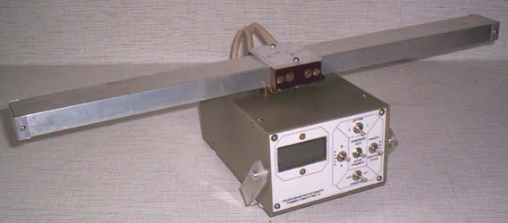
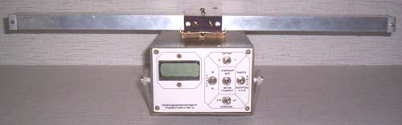
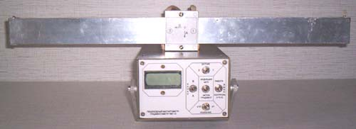
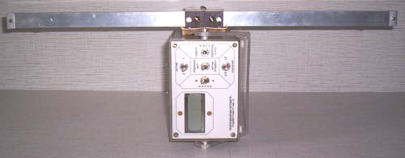
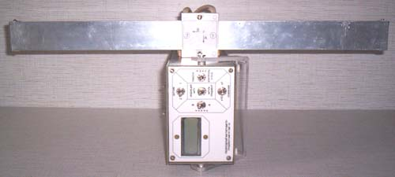
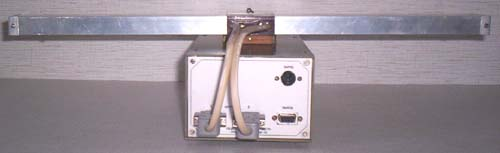

Цифровой пешеходный
двухкоординатный магнитометр-
градиентометр с магниторезистивными датчиками HMC1022

Назначение
Цифровой пешеходный двухкоординатный магнитометр-градиентометр
(ПДМГ) предназначен для оперативного измерения и контроля величины индукции
постоянного магнитного поля (сопоставимого с магнитным полем Земли), а также
градиента магнитной индукции, с помощью двух магниторезистивных датчиков типа
HMC1022 [1]. Возможные области применения прибора:
- Прямые измерения магнитной индукции и градиента магнитной
индукции слабых постоянных магнитных полей (сравнимых с магнитным полем
Земли).
- Работа в качестве металлоискателя или металлодетектора
при поиске и обнаружении достаточно крупных ферромагнитных объектов
(трубопроводов, техники, свалок, кладов, оружия и т. п.).
- Построение маршрутов прокладки трасс подземных и
подводных трубопроводных коммуникаций, приблизительная оценка их состояния.
- Измерение полей рассеяния постоянных магнитов и магнитных
систем при их конструировании, обслуживании и ремонте.
- Оценка качества размагничивания стальных изделий [6].
- Оценка магнитной обстановки.
- Составление магнитных карт местности и магнитных образов
объектов (магнитная паспортизация).
- Построение различных измерительных установок и комплексов
[4].
Прибор имеет автономное питание - аккумуляторную батарею,
подзарядка которой может осуществляться сетевым зарядным устройством [7], и
ручку для переноски. Штанга с датчиками может крепиться к корпусу прибора в
четырех различных положениях.
Технические данные ПДМГ:
- диапазон измеряемых значений величины индукции
постоянного магнитного поля -199.9 ... +199.9 мкТл (-1.999 ... +1.999 Гс) (3
1/2 цифры и индикатор полярности) по каждой компоненте магнитной индукции
(четыре канала - два датчика и две взаимноортогональных координаты)
- коэффициент преобразования электронных преобразователей
прибора 1 мВ/мкТл (100 мВ/Гс) по каждой компоненте магнитной индукции (4
канала)
- разрешающая способность 100 нТл по каждой компоненте
магнитной индукции (4 канала)
- погрешность измерения магнитной индукции не более 3 %
+
2 ед. счета
- диапазон измеряемых значений величины градиента индукции
постоянного магнитного поля -199.9 ... +199.9 мкТл/м (-1.999 ... +1.999
Гс/м) (3 1/2 цифры и индикатор полярности) по двум взаимноортогональным
направлениям; имеется режим измерения градиента с десятикратным усилением в
пределах -19.99 ... +19.99 мкТл/м
- питание: в автономном режиме - встроенная аккумуляторная
батарея напряжением 12.6 В, емкостью 1.2 А ∙
час, время непрерывной работы до 8 часов, подзарядка осуществляется с
помощью сетевого зарядного устройства; в стационарном режиме сетевое
зарядное устройство может использоваться для питания прибора от сети
переменного тока напряжением 220 В частотой 50 Гц
- прибор имеет естественное воздушное охлаждение, готов к
работе сразу после включения, время непрерывной работы не ограничено
- на задней панели прибора имеется разъем для подключения
внешнего вольтметра или аналого-цифрового преобразователя с компьютером для
обработки сигналов
- габаритные размеры электронного блока не более 150 х 90 х
190 мм3 (без элементов управления и подключения)
- габаритные размеры штанги с датчиками не более 520 х 60 х
35 мм3; длина кабелей 0.2 м
- масса не более 1.5 кг (с аккумулятором)
Режимы работы ПДМГ:
- измерение поперечной относительно оси штанги компоненты
магнитной индукции в зоне заднего датчика
- измерение поперечной относительно оси штанги компоненты
магнитной индукции в зоне переднего датчика
- измерение продольной относительно оси штанги компоненты
магнитной индукции в зоне заднего датчика
- измерение продольной относительно оси штанги компоненты
магнитной индукции в зоне переднего датчика
- измерение градиента поперечной относительно оси штанги
компоненты магнитной индукции
- измерение градиента продольной относительно оси штанги
компоненты магнитной индукции
- измерение градиента поперечной относительно оси штанги
компоненты магнитной индукции с десятикратным усилением
- измерение градиента продольной относительно оси штанги
компоненты магнитной индукции с десятикратным усилением
- контроль напряжения батареи
Конструкция
Конструкция и принцип работы ПДМГ аналогичны предыдущей
разработке [3]. Прибор состоит из двух идентичных двухкоординатных датчиков,
построенных на основе взаимноортогональных двухосных магниторезистивных
преобразователей HMC1022 фирмы Honeywell [1]. Датчики расположены на некотором
расстоянии друг от друга (измерительная база 0.5 метра) на концах немагнитной
штанги (алюминиевая труба прямоугольного сечения) таким образом, чтобы
магниторезистивные преобразователи находились в одной плоскости, и их
измерительные оси были параллельны и одинаково ориентированы. Поворотом штанги
(вручную) можно задавать различную ориентацию плоскости преобразователей
относительно поверхности Земли. Штанга с датчиками крепится к корпусу
электронного блока, датчики подсоединяются к электронному блоку кабелями. В
электронном блоке расположена аккумуляторная батарея, стабилизатор напряжения,
электронные преобразователи и цифровой вольтметр, используемый для индикации
показаний [2]. На электронном блоке имеется группа переключателей, с помощью
которых можно задавать режим работы ПДМГ, а также ручка для переноски. Для
удобства проведения измерений штанга с датчиками может крепиться либо к верхней,
либо к боковой панели корпуса электронного блока в двух взаимноортогональных
положениях.




На задней панели ПДМГ расположены разъемы для подключения
датчиков, внешних приборов и зарядного устройства.

Для калибровки ПДМГ использовались кольца Гельмгольца [5] с
известным коэффициентом преобразования по току.
Желающие приобрести или самостоятельно изготовить цифровой
пешеходный магнитометр-градиентометр могут обратиться за дополнительной
информацией к автору (см. раздел Контактная информация).
Соотношения между единицами измерения (Тл - Тесла, Гс
- Гаусс):
- 1 Тл = 10000 Гс
- 1 мТл = 10 Гс
- 1 мкТл = 10 мГс
- 1 нТл = 10 мкГс
- 1 Гс = 0.1 мТл = 100 мкТл
- 1 мГс = 100 нТл
Ссылки:
- http://honeywell.ru (сайт фирмы Honeywell)
- Встраиваемый цифровой вольтметр с диапазоном измерения -199.9
... +199.9 мВ
- Пешеходный двухкоординатный магнитометр-градиентометр
- Приборы для
измерения магнитных полей
- Системы колец
Гельмгольца (катушки Гельмгольца)
- Установки и
устройства для размагничивания стали
- Устройство для зарядки свинцово-кислотных герметизированных
аккумуляторов 12.6 В 1.2 А ∙ час
Словарь
терминов:
- Аналого-цифровой преобразователь -
устройство для преобразования аналогового электрического сигнала в цифровой.
- Вольтметр - прибор для измерения
электрического напряжения.
- Градиент функции
- вектор, направление которого совпадает с направлением наибыстрейшего
роста функции, а величина равна скорости роста функции в этом направлении.
- Магнитная индукция - вектор, численно
равный пределу отношения силы, действующей со стороны магнитного поля на
элемент проводника с электрическим током, к произведению тока и длины
элемента проводника, если длина этого элемента стремится к нулю, а элемент
так расположен в поле, что этот предел имеет наибольшее значение, и
направленный перпендикулярно к направлению элемента проводника и к
направлению силы, действующей на этот элемент со стороны магнитного поля,
причем из его конца вращение по кратчайшему расстоянию от направления силы к
направлению тока в элементе проводника должно быть видно происходящим против
часовой стрелки.
- Магнитное поле
- разновидность электромагнитного поля, создаваемая движущимися
электрическими зарядами или токами и оказывающая силовое воздействие на
движущиеся электрические заряды или токи.
- Магнитометр - прибор для магнитных
измерений.
- Магниторезистивный преобразователь (датчик)
- устройство для получения зависящего от магнитной индукции электрического
сигнала, принцип работы которого основан на магниторезистивном эффекте.
- Магниторезистивный эффект - изменение
электрического сопротивления проводника или полупроводника при помещении его
в магнитное поле..
04.05.2007
11.05.2007
Альтернативные источники
энергии
Компьютеры и
Интернет
Магнитные поля
Механотронные системы
Перспективные
разработки
Электроника и
технология
Главная страница